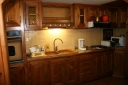

façade
ensoleillée

vue depuis
le grenier
Renseignements
administratifs
Adresse de la location :
09800 Galey
Loueur :
Yvette et Alain Martins
19, rue de la maison rouge
77185 Lognes
tel : 01.60.17.03.61
tel : 06.19.50.93.39
Mandataire :
Claudine Sanchez
route d’Escarchein
09800 Galey
tel : 05.61.96.16.60

cour devant
la maison
Description complète
Localisation
et
annexes
Située dans le haut du village, en retrait de la rue principale, la maison donne sur une cour encadrée par d'autres maisons et une impasse privative garantissant le calme.
Son orientation vers l'Ouest limite l'ensoleillement direct et offre une vue sur le clocher de l'Église Saint-Pierre.
vue sur léglise
depuis l'impasse
Architecture
et confort
Ancienne maison (début XIXème siècle) aménagée en maison de village par un fils du pays, la bâtisse émerge en partie de la terre, permettant ainsi aux températures intérieures de rester clémentes malgré les saisons marquées du climat montagnard.
La maison n'est pas adaptée au séjour de personnes à mobilité réduite.

salle à manger
côté cuisine

cuisine américaine
Rez de chaussée :
Carrelage au sol, lambris et peinture aux murs, plafond à poutres apparentes.
- L'entrée contient des patères et un porte-parapluies. Elle donne sur l'escalier (bois recouvert tapis) menant au premier étage et sur la salle à manger (avec porte vitrée).
- La salle à manger (environ 15 m²) peut contenir confortablement jusqu'à six personnes. Elle comprend une cheminée, une table (chêne) ronde, six chaises et une télévision couleurs. Elle s'ouvre sur une cuisine américaine fonctionnelle, annexée d'une souillarde et d'un cabinet d'aisance.
- La cuisine (environ 5m²) est équipée d'un évier à double vasque, d'un four-grill, d'un four à micro-ondes, de nombreux placards (merisier massif), d'un réfrigérateur à compartiment congélateur, d'une table de cuisson, d'une hotte aspirante, d'une cafetière, d'un grille-pain, d'une batterie de cuisine complète et d'un couvert pour 6 personnes. Le plan de travail est recouvert de carrelage.
salle d'eau

chambre d'adultes
Premier étage :
Moquette au sol, papier aux murs, lambris au plafond.
- Le pallier comporte une grande penderie avec placard. Il dessert la salle d'eau et la chambre d'adultes.
- La salle d'eau (environ 5 m²) est équipée d'une cabine de douche, d'une large vasque sous un grand miroir, d'une armoire de toilette, d'un rangement sous lavabo, de sanitaires (broyeur), d'un lave-linge et d'un étendoir à linge.
- La chambre d'adultes (environ 15 m²) contient un lit pour deux personnes (140 x 190 cm), deux chevets, un fauteuil et un deuxième grand placard. Elle donne sur l'escalier (bois recouvert moquette) menant à l'étage supérieur.

grenier :
lits jumeaux
Deuxième étage (grenier aménagé) :
Parquet massif au sol, papier aux murs, lambris au plafond.
- La chambre (environ 15 m²), légèrement mansardée, occupe entièrement le vaste étage et contient deux lits d'une personne (90 x 190 cm) chacun, un bureau, une planche et un fer à repasser.
La pièce est équipée de deux penderies dont l'une comprenant un placard.
Autres accessoires :
- aspirateur ;
- moustiquaires pour les fenêtres.

vue depuis
le grenier

grenier
côté fenêtres

salle à manger
côté cour
Caractéristiques
techniques
Surperficie totale : environ 55 m²
Chauffage :
L'ensemble est chauffé par un radiateur électrique dans chaque pièce (5 au total). Celui de la salle d'eau fait également office de sèche-serviettes.
Eau chaude et robinetterie :
Toute l'eau est chauffée par un ballon électrique.
Les robinets (évier et lavabo) et la douche sont équipés de mitigeurs.
Table de cuisson :
Elle contient deux plaques au gaz.
Ouvertures et éclairage :
Tout l'éclairage artificiel est électrique.
- salle à manger : grande fenêtre (avec volets et rideaux brise-bise), plafonnier à double tubes de néon et applique ;
- cuisine : deux appliques, éclairage propre à la hotte et petit néon au-dessus de l'évier ;
- WC : plafonnier ;
- souillarde : plafonnier ;
- entrée et escalier : porte d'entrée vitrée (avec rideau), plafonnier au néon ;
- salle d'eau : petite fenêtre, plafonnier et spots au-dessus du miroir.
- chambre d'adultes : grande fenêtre (avec volets, voilages et rideaux), lampes de chevet et lampadaire ;
- escalier : deux plafonniers ;
- chambre d'enfants : fenêtres de toit (avec voilages), lampes de chevet et plafonnier.
| <-
le cadre |
tarifs et
réservations
-> |